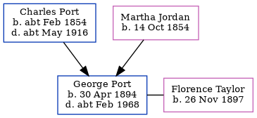

George Arthur Port 1894 - c1968
[ Home ] | [ Calendar ] | [ Surnames Index ] | [ Errors ] | [ Family History ]A greengrocer's assistant and the child of Charles Port (a grocer and confectioner) and Martha Jordan (a shop keeper), George Port, the third cousin twice-removed on the mother's side of Nigel Horne, was born in Cheriton, Kent, England on 30 Apr 18941,2,3 and baptised there at All Souls on 8 Jul 1894. He married Florence Taylor in Elham, Kent, England around Feb 19215.
During his life, he was living at Enbrook Buildings in Cheriton on 31 Mar 19016; at 83 High Street in Cheriton on 2 Apr 19111; at 85 High Street in Cheriton in 1914; and at 20 Sidney Street, Folkestone, Kent on 29 Sept 19392. During 1914, he was serving in the military at Manor House Hospital, Folkestone, Kent, England (rank: Private Red Cross Volunteer at Manor House, Folkestone).
He died c. Feb 1968 in Folkestone, Kent, England4.
Parents
- Charles Randle was born c. Feb 1854
- Martha Matilda was born on 14 Oct 1854
Citations
- 1911 Census for England & Wales - Findmypast (was age 17 and the son of the head of the household)
- 1939 Register - Findmypast (was the head of the household ARP Warden)
- England & Wales births 1837-2006 - Findmypast
- England & Wales deaths 1837-2007 - Findmypast
- England & Wales Marriages 1837-2005 - Findmypast
- 1901 England, Wales & Scotland Census - Findmypast (was age 6 and the son of the head of the household)
Media
Surrey Recruitment Registers 1908-1933 - GBM-SURREG-00073138
England & Wales marriages 1837-2005 - BMD/M/1921/1/AZ/000900/023
England Births & Baptisms 1538-1975 - R_884106148
Kent Baptisms - GBPRS/CANT/B/96443060
England & Wales births 1837-2006 - BMD/B/1894/2/AZ/000448/187
1901 England, Wales & Scotland Census - GBC/1901/0004511286
England & Wales deaths 1837-2007 - BMD/D/1968/1/AZ/000952/096
1939 Register - TNA/R39/1721/1721C/011/43
British Army, British Red Cross Society volunteers 1914-1918 - GBM/RED-CROSS/156853
Family Tree
Map
Generated by ged2site. Last updated on Jul 3, 2024
Known Issues
Residence record for 1914 contains no citation
Listed in the residence for 29 Sep 1939, but spouse Florence Taylor is not